Après votre surfaçage radiculaire
Des gencives plus saines, des dents mieux protégées ! Votre participation au quotidien est essentielle pour maintenir les résultats et préserver la santé de vos gencives.
Cette fiche est remise par le cabinet du Dr Benjamin Darmon après une séance de surfaçage radiculaire et de perfectionnement à l’hygiène bucco-dentaire. Vous la retrouvez ici pour la consulter à tout moment, depuis votre téléphone ou votre ordinateur, ou pour la télécharger et l’imprimer.
Elle résume les gestes à adopter chaque jour : le brossage des dents, le passage des brossettes interdentaires et, là où la brossette ne passe pas, le fil dentaire.
Le brossage des dents : technique BROS
2 fois par jour pendant 2 minutes, avec une brosse à dents souple.
-
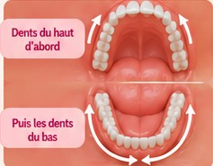
B comme Brosser
Toutes les dents, haut et bas
Brossez les dents du haut et du bas séparément. Commencez par les dents du haut, puis passez aux dents du bas. Gardez la bouche suffisamment ouverte pour bien voir les zones que vous brossez.
-
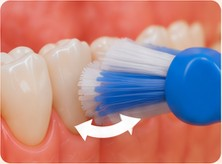
R comme Rouler
Réaliser des mouvements
Effectuez de petits mouvements de va-et-vient en restant en contact avec la gencive, puis réalisez un mouvement de « rouleau » de la gencive vers la dent.
-
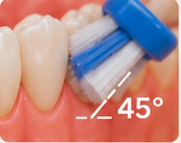
O comme Oblique
Placer la brosse à 45°
Placez la brosse à 45° à la jonction dent-gencive (la moitié sur la gencive, la moitié sur la dent), côté joue et côté langue ou palais.
-
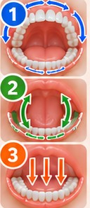
S comme Suivre
Un parcours complet
Suivez toujours le même parcours, en faisant le tour de toutes vos dents sans oublier aucune face :
- 1. côté joue et lèvres (face externe)
- 2. côté langue ou palais (face interne)
- 3. dessus des dents (faces masticatoires)
Commencer toujours au même endroit permet de réduire le risque d’oublier une zone.
Le passage des brossettes interdentaires
1 fois par jour, de préférence le soir, après le brossage des dents.
-
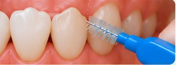
AChoisir le bon endroit
Utilisez une brossette pour chaque espace entre les dents (là où la brosse à dents ne passe pas).
-
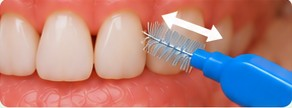
BEffectuer le mouvement
Insérez doucement la brossette et faites quelques allers-retours (2 à 3 fois) sans forcer.
-
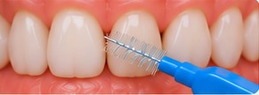
CBrosser chaque espace
Passez la brossette dans tous les espaces concernés, sur les dents du haut et du bas, à l’extérieur comme à l’intérieur.
Comment calibrer sa brossette ?
Le bon calibre est celui qui remplit l’espace sans forcer, pour un brossage efficace et confortable.
-
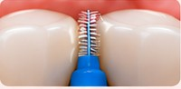
1Essayer
Choisissez une brossette et insérez-la doucement dans l’espace.
-
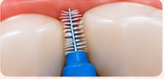
2Vérifier la tenue
La brossette doit remplir l’espace, être légèrement en contact avec les parois, sans forcer.
-
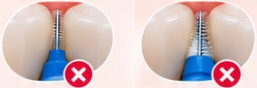
3Ajuster si besoin
Trop petite : elle flotte et ne brosse pas suffisamment. Trop grande : elle ne passe pas ou fait mal.
-
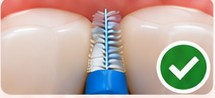
4Le bon calibre
La brossette entre facilement, remplit bien l’espace, sans douleur.
Le fil dentaire
À utiliser là où la brossette ne passe pas (espaces très serrés).
-
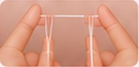
1Préparer le fil
Enroulez le fil autour d’un majeur et de l’autre pour le tendre. Laissez 2 à 3 cm entre vos doigts.
-
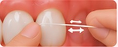
2Insérer le fil
Glissez doucement le fil entre les dents, en effectuant un léger mouvement de va-et-vient.
-
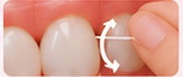
3Glisser le long de la dent
Plaquez le fil contre une dent en formant un « C », puis faites-le glisser doucement du haut vers le bas (sous la gencive), sans mouvement de scie.
-
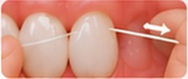
4Sortir sans repasser
Faites sortir le fil par un côté, sans repasser par le point de contact, puis passez à l’espace suivant avec une portion de fil propre.
Quelles brossettes utiliser ?
Il existe plusieurs tailles de brossettes, repérées par couleur. Vous pouvez avoir besoin de plusieurs calibres selon les espaces.
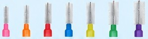
Les brossettes se distinguent par leur couleur
Conseils en plus
- Changez de brossette dès que les brins sont usés (en moyenne toutes les 1 à 2 semaines).
- Ne forcez pas, pour éviter d’abîmer la gencive.
- Prenez le temps, c’est un geste essentiel.
- En cas de doute sur la taille ou la technique, n’hésitez pas à demander conseil au cabinet.
En résumé
- 2 minutes, 2 fois par jour.
- Technique BROS (Brosser, Rouler, Oblique, Suivre).
- Brossettes interdentaires une fois par jour.
- Fil dentaire là où la brossette ne passe pas.
- Des gencives saines durablement !
Pour des dents et des gencives en bonne santé, chaque geste compte !